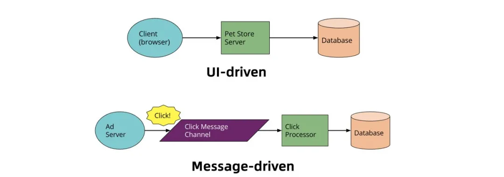
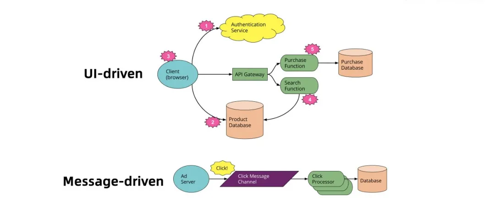

- 01 架构的演进.md.html
- 02 Serverless 的价值.md.html
- 03 常见 Serverless 架构模式.md.html
- 04 Serverless 技术选型.md.html
- 05 函数计算简介.md.html
- 06 函数计算是如何工作的？.md.html
- 07 函数粘合云服务提供端到端解决方案.md.html
- 08 函数计算的开发与配置.md.html
- 09 函数的调试与部署.md.html
- 10 自动化 CI&CD 与灰度发布.md.html
- 11 函数计算的可观测性.md.html
- 12 典型案例 1：函数计算在音视频场景实践.md.html
- 13 典型案例 3：十分钟搭建弹性可扩展的 Web API.md.html
- 14 Serverless Kubernetes 容器服务介绍.md.html
- 15 Serverless Kubernetes 应用部署及扩缩容.md.html
- 16 使用 Spot 低成本运行 Job 任务.md.html
- 17 低成本运行 Spark 数据计算.md.html
- 18 GPU 机器学习开箱即用.md.html
- 19 基于 Knative 低成本部署在线应用，灵活自动伸缩.md.html
- 20 快速构建 JenkinsGitlab 持续集成环境.md.html
- 21 在线应用的 Serverless 实践.md.html
- 22 通过 IDEMaven 部署 Serverless 应用实践.md.html
- 23 企业级 CICD 工具部署 Serverless 应用的落地实践.md.html
- 24 Serverless 应用如何管理日志&持久化数据.md.html
- 25 Serverless 应用引擎产品的流量负载均衡和路由策略配置实践.md.html
- 26 Spring CloudDubbo 应用无缝迁移到 Serverless 架构.md.html
- 27 SAE 应用分批发布与无损下线的最佳实践.md.html
- 28 如何通过压测工具+ SAE 弹性能力轻松应对大促.md.html
- 29 SAE 极致应用部署效率.md.html
- 捐赠
07 函数粘合云服务提供端到端解决方案
导读：阿里云Serverless 产品函数计算可以作为粘合剂， 串联其他云服务提供端到端解决方案， 从而简化编程模型， 快速实现最上层的业务目标。
传统单体应用的拆解

首先我们来看下单体应用里面常见的两个编程模型，如上图所示，一种是 UI-driven，另外一种是 Message-driven。单体应用这种体系结构，客户端可能相对不那么智能，系统中的许多逻辑（比如身份验证、页面导航、搜索、交易等）由服务器应用程序实现，随着业务逻辑复杂度的增长，服务端的应用程序会越发膨胀和难以维护。
而在 Message-driven 异步消息处理这种模式中，需要用户实现一个常驻的、弹性高可用的消费者服务。为了更专注具体业务逻辑的开发，对一个庞大的单体应用进行拆解，充分利用云服务体系结构是一个非常好的解决方案。在这里，最大的关键是如何为应用程序的各个组件选择和使用正确的云服务，而通过函数作为粘合剂来串联云上的托管服务，就是一个非常好的实践。

如上图所示，UI-driven 切换到 Serverless 架构以后：
- 第三方 BaaS 服务取代认证逻辑；
- 允许客户端通过临时 token 直接访问架构与第三方上的数据子库（BaaS）；
- 宠物商店服务端的逻辑可以转移到客户端中，例如跟踪用户访问，读取数据库转化为可视视图等，客户端则慢慢转化为单页面应用；
- CPU 密集型或者需要访问大量数据，比如搜索，使用 FaaS 实现，无需一直运行的 server；
- 购买功能使用另外一个 FaaS 实现，因为安全原因放在服务端。
Message-driven 切换到 Serverless 架构以后：
与单体应用示例相比，这里改动很小，同时使用 FaaS 功能替换了长期存在的消息消费者应用程序，消息消费的高可用性交给了云平台去负责。
事件驱动与编排助力完整 Serverless 应用

目前，在很多的人的第一印象中，一般将 FaaS，也就是 Fucntion as a Service（函数即服务）等同于 Serverless， 比如阿里云的函数计算、AWS 的 Lambda，但是实际上有许多其他的云服务也是 Serverless，他们和 FC 一起构建成完整的 Serverless 应用，让用户完全聚焦他最上层和核心的原始业务。比如，用户直接使用 API 网关， 就可以从 API 限流、鉴权等许多 API 层面上需要考虑的繁杂工作中解放出来；直接使用 Serverless 的 NoSQL 数据库 TableStore 或者对象存储 OSS 来持久化数据，替代自己管理数据库实例；使用 SLS 或者 Datahub 从外部系统收集数据流；使用消息服务 MNS/MQ 来管理消息等。
用户可以使用一个个函数将这些 Serverless 服务串联起来，从而达到构建具体复杂的业务逻辑和应用的目标。在这里，用户也可以选择 Serverless 工作流来编排函数和其他云服务，简化了开发和运行业务流程（比如自己去编写代码进行任务协调、状态管理、错误处理以及重试等繁琐工作），让用户聚焦业务逻辑开发。当然，用户也可以使用阿里云提供的开发工具链来简化自动化部署和持续集成。使用这些开箱即可使用的工具可以帮助用户快速达到想要的目标和效果。
如果是一个庞大复杂的单体应用或者是一个面向服务体系的架构，开发者需要负责所有的事情，包括代码的编写、管理和部署数据库以及其他相关的后端服务等，切换到 Servrless 架构， 可以看到：特定的的模块交由特定的托管云服务去处理， 之后再使用实现了具体业务代码的函数将它们串联起来， 也实现了解耦。 为了使这种架构运转的更有效率， 事件驱动是一个必不可少的特性， 比如用户尝试往 OSS 上传一个文件或者更新表格存储会自动做一些逻辑处理，对于开发者来说， 最关心的是什么样的事件可以触发我的编写逻辑。
Serverless 粘合云服务示例
这里有一个有趣的例子：

如上图所示，用户上传图片文件，产生消息事件触发了 FC 函数执行，处理生成了图片缩略图，并将缩略图存储至对象存储 OSS，之后触发了另一个 FC 函数将图片产生的更新信息写入表格存储数据库，最后再触发一个 FC 函数完成搜索模块的更新。整个过程中文件处理存储、搜索服务、表格存储数据库服务被几个 FC 函数粘合为一个业务处理逻辑。
© 2019 - 2023 Liangliang Lee. Powered by gin and hexo-theme-book.